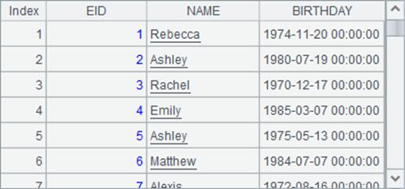
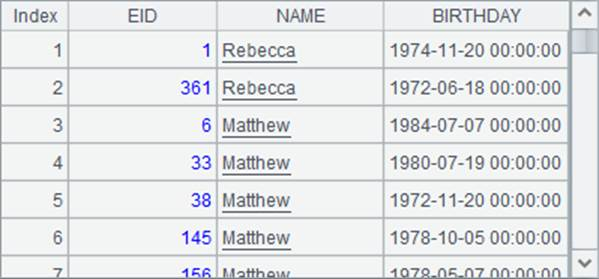
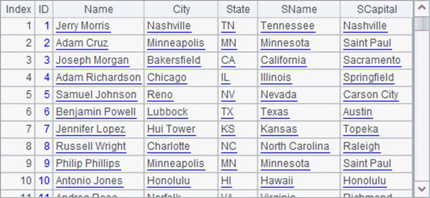

7.1.4 Returning a pure table sequence from a cursor
The features explained in this section only appear in esProc Enterprise Edition. Users who use the other editions can just skip it.
Similar to db.query@v(sql), cs.fetch(), when querying data in a cursor, can also work with @v option to return a pure table sequence. For example:
|
|
A |
B |
|
1 |
=demo.cursor@v("select EID, NAME, BIRTHDAY from employee") |
|
|
2 |
=A1.fetch(20) |
=ifpure(A2) |
|
3 |
=A1.fetch@x(20) |
=ifpure(A3) |
|
4 |
=file("PersonnelInfo.txt") |
|
|
5 |
=A4.cursor@tv(ID, Name, State, Gender) |
>A5.skip(90000) |
|
6 |
=A5.fetch@x(100) |
=ifpure(A6) |
After a cursor is generated, each operation on it will return a pure table sequence. Here are results of A2, B2, A3 and B3:
 

A file cursor can also use @v option. For example, A6 and B6 get the following results:
